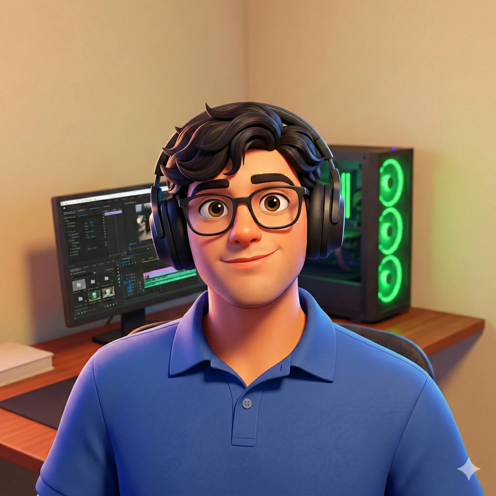
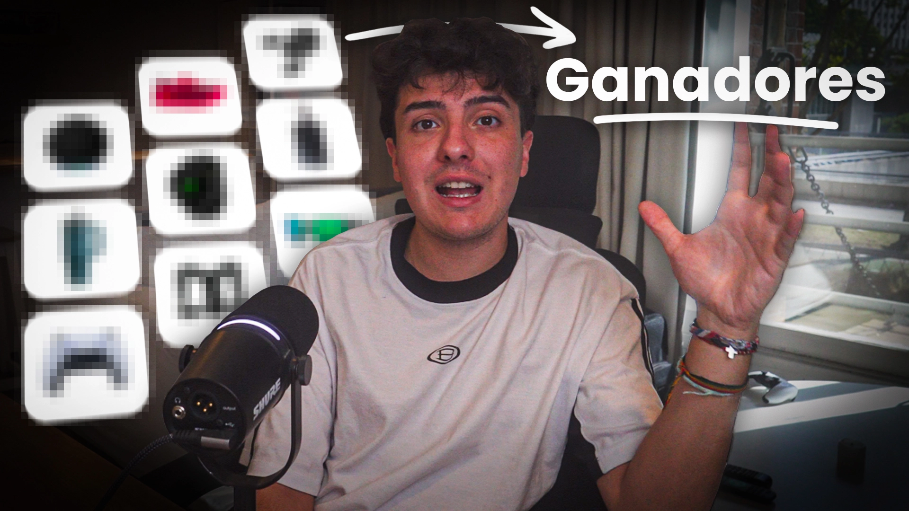
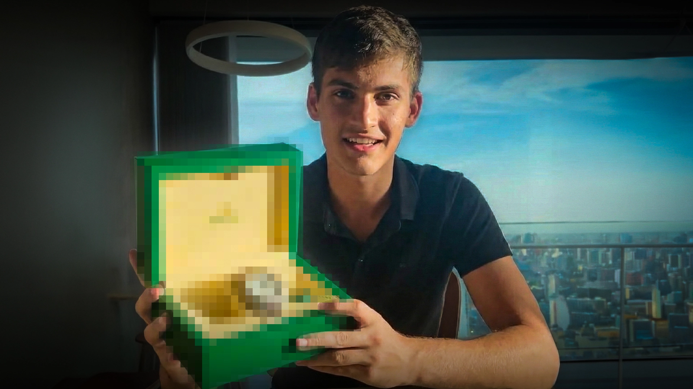
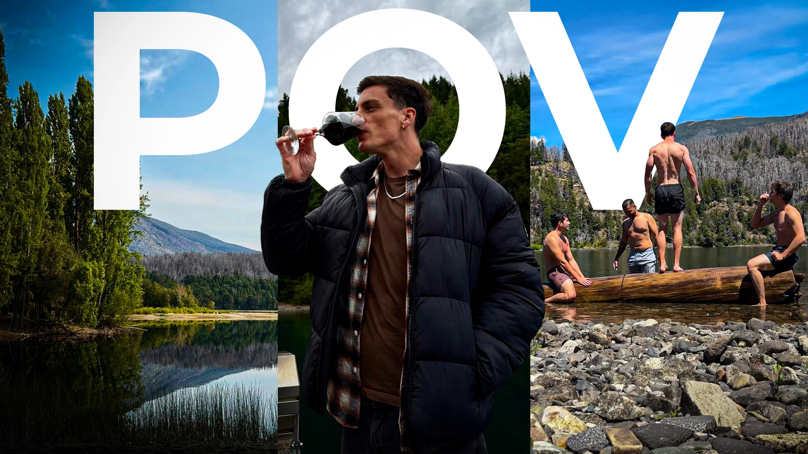
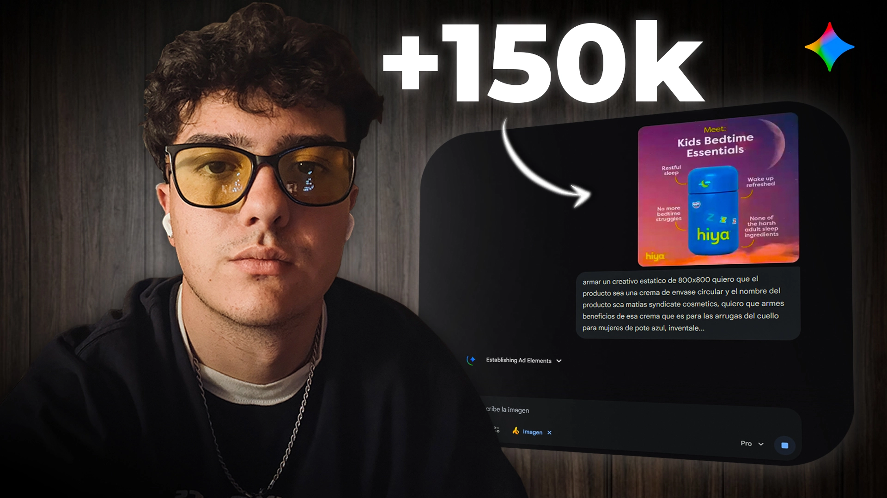
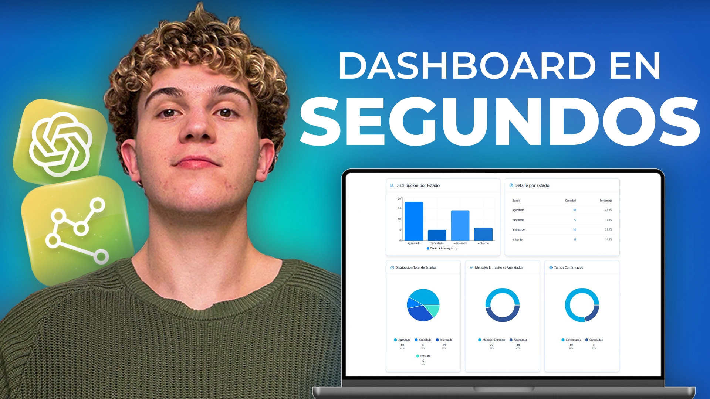
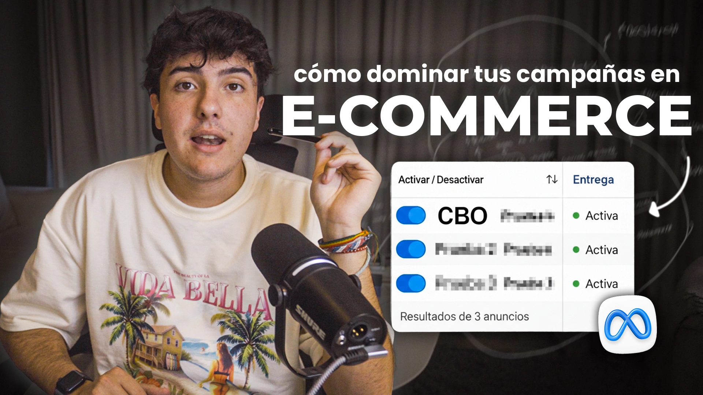
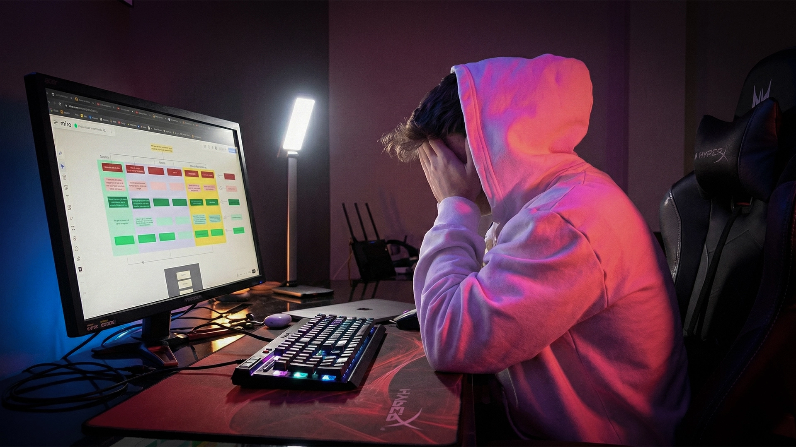
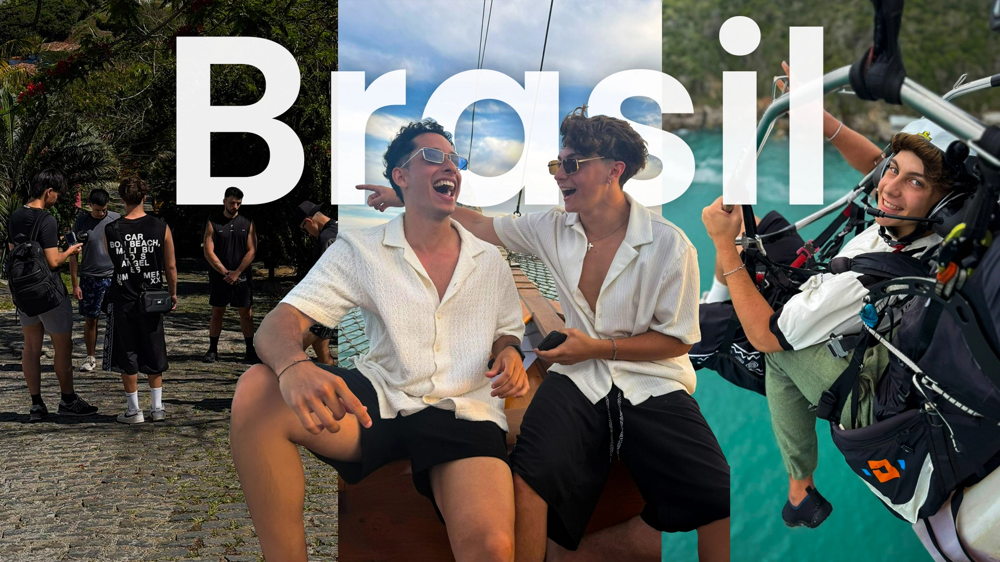

Dominio de Adobe Photoshop para la creación de miniaturas de alto impacto y máximo CTR, diseñadas para capturar la atención en YouTube.
Uso avanzado de Adobe Premiere Pro para que tus videos destaquen en redes sociales, potenciando tu marca y multiplicando tu audiencia.







